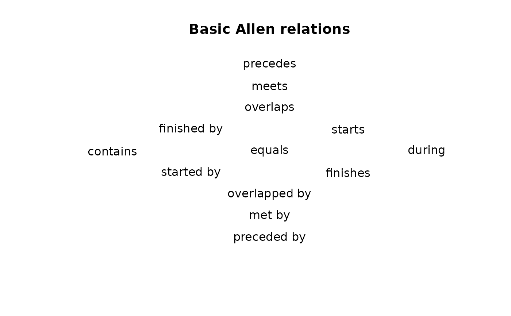

Illustrate Basic and Composite Allen Relations
allen_illustrate(relations = "basic", ...)A character string specifying the relation.
It must be one of "basic", "concurrent", "distinct",
"stratigraphic", "branching", "transformation", "reticulation",
"sequence", "branch", "transform", or "reticulate" (see details).
Further arguments to be passed to internal methods.
allen_illustrate() is called it for its side-effects: it results in a
graphic being displayed.
Illustrate basic and composite Allen relations for several chronological model domains with a Nokel lattice. Chronological model domains include stratigraphy and branching, transformative, and reticulate processes of artifact change.
The illustrative graphics include:
basicthe 13 basic Allen relations (default);
concurrentconcurrent relations;
distinctrelations with distinct endpoints;
stratigraphicbasic relations established by an observation of superposition;
branchingbasic branching relations;
transformationbasic relations of transformation;
reticulationbasic relations of reticulation;
sequencecomposite relations in a stratigraphic sequence;
branchcomposite relations of branching;
transformcomposite relations of transformation; or
reticulatecomposite relations of reticulation.
Harris, E. C. (1997). Principles of Archaeological Stratigraphy. Second edition. London: Academic Press.
Lyman, R. L. and O'Brien, M. J. (2017). "Sedation and Cladistics: The Difference between Anagenetic and Cladogenetic Evolution". In Mapping Our Ancestors: Phylogenetic Approaches in Anthropology and Prehistory, edited by Lipo, C. P., O'Brien, M. J., Couard, M., and Shennan, S. J. New York: Routledge. doi:/10.4324/9780203786376 .
Viola, T. (2020). Peirce on the Uses of History. De Gruyter. doi:10.1515/9783110651560 . See chapter 3, "Historicity as Process", especially p. 83-88.
Other Allen's intervals:
allen_analyze(),
allen_complement(),
allen_composition(),
allen_converse(),
allen_intersect(),
allen_joint_concurrency(),
allen_observe_frequency(),
allen_observe(),
allen_relation_code(),
allen_relation(),
allen_union()
## Plot the basic Allen relations
allen_illustrate()
